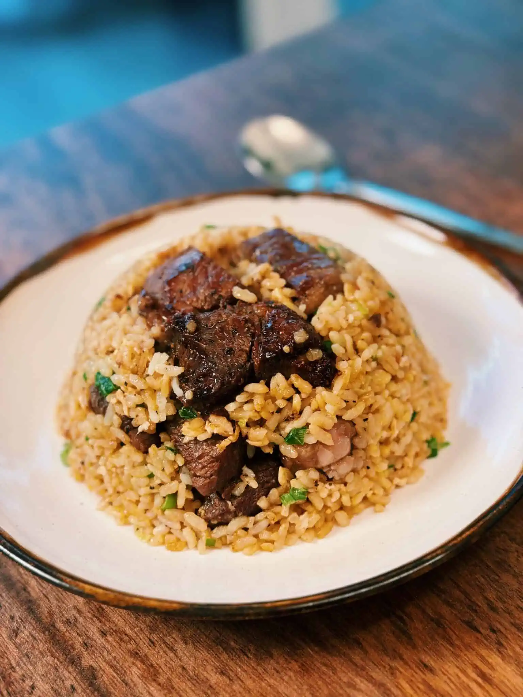

Golden Steak Fried Rice
Home

Description
Prep Time: 10 minsActive Time: 10 minsTotal Time: 20 mins
Course: Dinner, Main Course | Cuisine: Asian, Chinese
Yield 4 servings | Calories: 580kcal
Ingredients
- 2 Steak 170g each, cube
- 2 tbsp Soy Sauce
- 1.5 tbsp Oyster Sauce
- 1 tsp Black Pepper
- 0.5 tsp baking soda
- 0.5 tsp baking powder optional
Fried Rice
- 4 cups Cold Cooked Rice
- 4 Eggs separate yolks and whites
- 2 tbsp Butter
- 3 Green Onion separate whites and greens
- 1.5 tbsp Garlic minced
- 2.5 tbsp Soy Sauce
Steps
- Cut steak into bite-size cubes and marinate the steak with soy sauce, oyster sauce, black pepper, baking soda, and baking powder. Set it aside while you prep the rest of the ingredients.
- Add the egg yolk to cold-cooked day-old rice and mix well to ensure every grain of rice is coated in the egg yolk.
- In a pan, drizzle in oil and turn the heat to medium-high. Once the oil is hot, add in the beef.
- Let it set for around 30 seconds before pan-frying for 3-4 minutes or until all sides of the steak are brown. You can add additional cooking time depending on how you like your steak! Remove and set aside.
- In the same pan, add the white parts of the green onion and garlic. Saute for 30 seconds.
- Push everything to the side, and add beaten egg whites. Let the egg whites sit for 20 seconds before scrambling them.
- Next, add the rice and soy sauce. Saute on high heat for 2-3 minutes.
- Finally, add butter, the rest of the green onion, steak, and saute on high heat for 1-2 minutes.